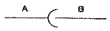
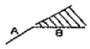

에너지관리기능장 (2010-07-11 기출문제)
1과목: 임의 구분
1. 증발배수(evaporation ratio)에 대한 설명으로 옳은 것은?
- 보일러로부터 1시간당 발생되는 증기량
- 보일러 전열면 1m2당 1시간의 증발량
- 보일러의 증발량과 그 증기를 발생시키기 위해 사용된 연료량과의 비
- 연료의 발열량을 표시하는 방법의 하나로서 고위발열량에서 수증기의 잠열을 뺀 것
(정답률: 67%)

2. 보일러 연소조절의 주의사항으로 틀린 것은?
- 보일러를 무리하게 가동하지 않아야 한다.
- 연소량을 증가시킬 경우에는 먼저 연료량을 증가시켜야 하며 연소량을 감소시킬 경우에는 먼저 통풍량을 감소시켜야 한다.
- 불필요한 공기의 연소실내 침입을 방지하고 연소실 내를 고온으로 유지한다.
- 항상 연소용 공기의 과부족에 주의하여 효율 높은 연소를 하지 않으면 안된다.
(정답률: 84%)
3. 보일러에 사용되는 자동제어계의 동작순서로 알맞은 것은?
- 검출 → 비교 → 판단 → 조작
- 조작 → 비교 → 판단 → 검출
- 판단 → 비교 → 검출 → 조작
- 검출 → 판단 → 비교 → 조작
(정답률: 89%)
4. A중유와 C중유의 일반적인 특성을 비교한 것 중 옳은 것은?
- A중유와 C중유는 비중 및 발열량이 같다.
- A중유는 C중유에 비하여 비중 및 발열량이 크다.
- A중유는 C중유와 비중은 같으나 발열량이 작다.
- A중유는 C중유에 비하여 비중이 적고 발열량이 크다.
(정답률: 68%)
5. 보일러의 통풍장치 방식에서 흡입통풍 방식에 관한 설명으로 맞는 것은?
- 연도의 끝이나 연돌하부에 송풍기를 설치하여 연소가스를 빨아내는 방식이다.
- 연도에서 연소가스와 외부공기와의 밀도차에 의해서 생기는 압력차를 이용한 방식이다.
- 노앞과 연돌 하부에 송풍기를 설치하여 노내압을 대기압보다 약간 낮은 압력으로 유지시키는 방식이다.
- 노입구에 압입송풍기를 설치하여 연소용 공기를 밀어넣는 방식이다.
(정답률: 83%)
6. 유량계 중 면적식 유량계에 속하는 것은?
- 벤투리미터
- 오리피스
- 플로우노즐
- 로터미터
(정답률: 73%)
7. 난방부하에 관한 설명 중 틀린 것은?
- 온수난방 시 EDR이 50m2 일 때의 난방부하는 22500 kcal/h 이다.
- 증기난방 시 EDR이 50m2 일 때의 난방부하는 32500 kcal/h 이다.
- 난방부하를 설계하기 위해서는 방열관 입구온도와 보일러 출구온도와의 차이를 필요로 한다.
- 난방부하를 설계하는 데는 건축물의 방위와 높이, 면적, 조건 등을 필요로 한다.
(정답률: 79%)
8. 온도조절식 증기트랩의 종류가 아닌 것은?
- 벨로즈식
- 바이메탈식
- 다이어프램식
- 버켓식
(정답률: 81%)
9. 노통 보일러와 비교한 연관 보일러의 특징을 설명한 것으로 틀린 것은?
- 전열면적이 커서 증발량이 많고 효율이 좋다.
- 비교적 빨리 증기를 얻을 수 있다.
- 질이 좋은 보일러 수(水)가 필요하다.
- 구조가 간단하여 설비비가 적게 든다.
(정답률: 84%)
10. 탄성식 압력계의 종류가 아닌 것은?
- 링 밸런스식 압력계
- 벨로즈식 압력계
- 다이어프램식 압력계
- 부르동관식 압력계
(정답률: 75%)
11. 집진장치의 종류 중 함진가스를 목면, 양모, 테프론, 비닐 등의 필터(filter)에 통과시켜 분진입자를 분리·포지시키는 집진방법은?
- 중력식
- 여과식
- 사이클론식
- 관성력식
(정답률: 89%)
12. 온수난방에서 시동 전에 물의 평균밀도가 0.9957 ton/m3 이고, 난방 중 온수의 평균밀도가 0.9828 ton/m3인 경우 시동 전에 비해 온수의 팽창량은 약 몇 ℓ 인가? (단, 온수시스템 내의 가동 전 보유수량은 2.28 m3이다.)
- 20
- 30
- 40
- 50
(정답률: 50%)
13. 과열기가 장착된 보일러에서 50분간의 증발량은 37500 kg이었고, LNG는 시간당 3075kg 소비되었다. 이때 보일러의 열효율은 약 몇 % 인가? (단, 급수온도는 120℃, 과열증기온도 290℃, 증기엔탈피 720 kcal/kg, 연료의 저위발열량 9540 kcal/kg 이다.)
- 76.7
- 81.8
- 86.9
- 92.0
(정답률: 41%)
14. 환수관내 유속이 타 방식에 비해 빠르고 방열기 내의 공기도 배출이 가능하고 방열량을 광범위하게 조절이 가능하여 방열기의 설치 위치에 제한이 없는 방식은?
- 중력환수방식
- 기계환수방식
- 진공환수방식
- 건식환수방식
(정답률: 81%)
15. 안전밸브가 2개 이상 있는 경우, 1개의 안전밸브를 최고사용압력 이하로 작동하게 조정한다면 다른 안전밸브를 최고사용압력의 몇 배 이하로 작동할 수 있돌고 조정하는가?
- 1.03
- 1.⑤
- 1.07
- 1.09
(정답률: 66%)
16. 과잉공기와 노내 연소온도 및 연소가스 중의 (CO2)% 관계를 옳게 설명한 것은?
- 과잉공기가 증가하면 연소온도는 내려가고, 연소가스 중의 (CO2)%는 증가한다.
- 과잉공기가 증가하면 연소온도는 높아지고, 연소가스 중의 (CO2)%는 증가한다.
- 과잉공기가 증가하면 연소온도는 내려가고, 연소가스 중의 (CO2)%는 감소한다.
- 과잉공기가 증가하면 연소온도는 높아지고, 연소가스 중의 (CO2)%는 감소한다.
(정답률: 69%)
17. 분출장치의 취급상의 주의사항으로 틀린 것은?
- 분출밸브, 콕크를 짝하는 담당자가 수면계의 수위를 직접 볼 수 없는 경우에는 수면계의 감시자와 공동을 신호하면서 분출을 한다.
- 분출을 하고 있는 사이에는 다른 작업을 해서는 안된다.
- 분출 작업을 마친 후에는 밸브 또는 콕크가 확실히 열린 후에 분출관의 닫힌 끝을 점검하여 누설여부를 확인한다.
- 분출관이 굽은 부분이 많으면 분출시 물의 반동을 받을 염려가 있으므로, 요소요소에 적당한 고정을 한다.
(정답률: 88%)
18. 화염 검출기의 종류 중 화염의 이온화에 의한 전기전도성을 이용한 것으로 가스 점화 버너에 주로 사용되는 것은?
- 플레임 로드
- 플레임 아이
- 스택 스위치
- 황화카드뮴 셀
(정답률: 89%)
19. 복사난방의 특징으로 적당하지 않는 것은?
- 실내의 온도분포가 균일하고 쾌감도가 높다.
- 시공 및 고장 수리가 쉽다.
- 충분한 보온, 단열 시공이 필요하다.
- 방열기의 설치가 불필요하므로 바닥면의 이용도가 높다.
(정답률: 85%)
20. 소형 및 주철제 보일러를 옥내에 설치하는 경우 보일러 동체 최상부로부터 천정, 배관 등 보일러 상부에 있는 구조물까지의 거리는 몇 m 이상으로 할 수 있는가?
- 0.3m
- 0.6m
- 0.5m
- 0.4m
(정답률: 62%)
2과목: 임의 구분
21. 복관 중력식 증기난방에서 건식환수관의 위치는 보일러 표준수위보다 몇 mm 높은 위치에 시공되어야 하는가?
- 350
- 650
- 450
- 200
(정답률: 70%)
22. 급수펌프로 보일러에 2kgf/cm2 압력으로 매분 0.18 m3 의 물을 공급할대 펌프 축마력은? (단, 펌프 효율은 80% 이다.)
- 1 PS
- 1.25 PS
- 60 PS
- 75 PS
(정답률: 61%)
23. 대류 방열기인 컨벡터인 설치에 대한 설명으로 틀린 것은?
- 외벽에 접하고 있는 창 아래에 설치하면 창으로부터 냉기하강을 방지할 수 있다.
- 벽으로부터 50~65 mm 정도 떨어진 상태로 설치하는 것이 좋다.
- 커버 하부를 바닥에서 최소한 90~100mm 정도 이격시켜 공기가 원활하게 유입되도록 한다.
- 방열기의 높이가 높고, 길이가 짧고, 폭이 넓은 것일수록 난방에 효과적이다.
(정답률: 80%)
24. 관 마찰계수가 일정할 때 배관 속을 흐르는 유체의 손실수두에 관한 설명으로 옳은 것은?
- 유속에 비례한다.
- 유속의 제곱에 비례한다.
- 관 길이에 반비례한다.
- 유속의 3승에 비례한다.
(정답률: 78%)
25. 벤투리(venturi)계로는 유체의 무엇을 측정하는가?
- 습도
- 유량
- 온도
- 마찰
(정답률: 89%)
26. 대류(對流)열전달 방식을 2가지로 올바르게 구분한 것은?
- 자유대류와 복사대류
- 강제대류와 자연대류
- 열판대류와 전도대류
- 교환대류와 강제대류
(정답률: 88%)
27. 외부와 열의 출입이 없는 열역학적 변화는?
- 정압변화
- 정적변화
- 단열변화
- 등온변화
(정답률: 81%)
28. “일정량의 기체의 부피는 압력에 반비례하고, 절대온도에 비례한다.”는 법칙은?
- 아보가드로의 법칙
- 보일-샤를의 법칙
- 뉴톤의 법칙
- 보일의 법칙
(정답률: 85%)
29. 직경이 각각 10cm와 20cm로 된 관이 서로 연결되어 잇다. 20cm 관에서의 속도가 2m/s 일 때 10cm 관에서의 속도는?
- 1m/s
- 2m/s
- 6m/s
- 8m/s
(정답률: 48%)
30. 보일러 청관제의 역할에 해당되지 않는 것은?
- 관수의 pH 조정
- 관수의 취출
- 관수의 탈산소작용
- 관수의 경도성분 연화
(정답률: 82%)
31. 보일러가 과열이 되면 그 부분의 강도가 저하되는데 이것이 심한 경우에는 보일러의 압력에 못 견디어 안쪽으로 오므라드는 것을 압궤라 한다. 압궤를 일으킬 수 있는 부분이 아닌 것은?
- 수관
- 연소실
- 노통
- 연관
(정답률: 81%)
32. 표준대기압에 상당하는 수은주 및 수주(水柱)는?
- 750 mmHg, 9.52 mAq
- 760 mmHg, 10.332 mAq
- 750 mmHg, 10.332 mAq
- 760 mmHg, 15.53 mAq
(정답률: 79%)
33. 보일러에서 2차 연소의 발생 원인으로 틀린 것은?
- 연도 등에 가스가 쌓이거나 와류의 가스포켓이나 모가 난 경우
- 불완전 연소의 비율이 크거나 무리한 연소를 한 경우
- 연도나 연소실벽 등의 틈이나 균열이 생긴 곳에서 찬공기가 스며드는 경우
- 연도의 단면적이 급격히 변하는 경우나 곡부의 각도가 완만한 경우 또는 곡부의 수가 적은 경우
(정답률: 71%)
34. 보일러 캐리오버(carry over)에 대한 설명으로 가장 옳은 것은?
- 보일러수 속의 유지류, 용해 고형물, 부유물 등의 농도가 높아지면서 드럼 수면에 안정한 거품이 발생하는 현상이다.
- 수분과 증기가 비등하는 프라이밍(priming) 현상이다.
- 보일러수 중에 용해되어 있는 고형분이나 수분이 증기의 흐름에 따라 발생증기에 포함되어 분출되는 현상이다.
- 보일러 수에 용해된 유지분 등이 동 내면에 고착하는 현상이다.
(정답률: 77%)
35. 보일러의 내부부식 주요원인으로 볼 수 없는 것은?
- 급수 중에 유지류, 산류, 탄산가스, 염류 등의 불순물을 함유하는 경우
- 일반 전기배선에서의 누전으로 인하여 전류가 장시간 흐르는 경우
- 연소가스 속의 부식성 가스에 의한 경우
- 강재의 수축 표면에 녹이 생겨서 국부적으로 전위차가 발생하여 전류가 흐르는 경우
(정답률: 76%)
36. 압력 10 kgf/cm2, 건도가 0.95인 수증기 1kg의 엔탈피는 약 몇 kcal/kg 인가? (단, 10 kgf/cm2에서 포화수의 엔탈피는 181.2 kcal/kg, 포화증기의 엔탈피는 662.9 kcal/kg 이다.)
- 457.6
- 638.8
- 810.9
- 1120.5
(정답률: 47%)
37. 습증기(h), 포화증기(h‶) 및 포화수(h‵)의 엔탈피를 서로 비교한 값이 옳게 표시된 것은?
- h‶＞h＞h‵
- h＞h‶＞h‵
- h‵＞h＞h‶
- h＞h‵＞h‶
(정답률: 71%)
38. 보일러수의 용존산소를 화학적으로 제거하여 부식을 방지하는데 사용하는 약제가 아닌 것은?
- 탄닌
- 아황산나트륨
- 히드라진
- 고급지방산폴리아인
(정답률: 76%)
39. 보일러 급수의 외처리의 종류에 해당되지 않는 것은?
- 여과법
- 약품처리법
- 기폭법
- 페인트도장법
(정답률: 73%)
40. 보일러에서 그을음 불어내기(soot blow)를 할 때 주의사항으로 틀린 것은?
- 그을음을 제거하는 시기는 부하가 가벼운 시기를 선택한다.
- 그을음 제거는 흡출통풍을 감소시킨 후 실시한다.
- 한 장소에서 장시간 불어대지 않도록 한다.
- 증기분사식 수트블로워는 증기를 분사하기 전에 배관을 충부히 예열하면서 응축수를 배출한다.
(정답률: 67%)
3과목: 임의 구분
41. 에너지이용합리화법상 에너지의 최저소비효율기준에 미달하는 효율관리기자재의 생산 또는 판매금지 명령을 위반한 자에 대한 벌칙은?
- 1년 이하의 징역 또는 1천만원 이하의 벌금
- 1천만원 이하의 벌금
- 2년 이하의 징역 또는 2천만원 이하의 벌금
- 2천만원 이하의 벌금
(정답률: 59%)
42. 다음 중 길이를 측정할 수 없는 것은?
- 버니어캘리퍼스
- 깊이마이크로미터
- 다이얼게이지
- 사인바
(정답률: 78%)
43. 온수귀환방식 중 역귀환 방식에 관한 설명으로 옳은 것은?
- 배관길이를 짧게 하여 온수공급거리에 따라 보일러에서 가까운 곳과 먼 곳의 방열기 온도차를 늘리는 방식이다.
- 방열기를 통과한 귀환온수가 순차적으로 보일러에 귀환하여 가까운 곳과 먼 곳의 방열기 온도차를 늘리는 방식이다.
- 각 방열기에 공급되는 유량분배에 차등을 두어 가까운 곳과 먼 곳의 방열기 온도차를 줄이는 방식이다.
- 각 방열기에 공급되는 유량분배를 균등하게 하여 가까운 곳과 먼 곳의 방열기 온도차를 줄이는 방식이다.
(정답률: 79%)
44. 다음 중 배관의 신축 이음쇠의 종류가 아닌 것은?
- 벨로스형 신축 이음쇠
- 스프링형 신축 이음쇠
- 루프형 신축 이음쇠
- 슬리브형 신축 이음쇠
(정답률: 73%)
45. 관의 분해·수리·교체가 필요할 때 사용되는 배관 이음쇠는?
- 소켓
- 티
- 유니언
- 엘보
(정답률: 91%)
46. 에너지사용량이 대통령령으로 정하는 기준량 이상이 되는 에너지다소비사업자가 신고해야 하는 사항으로 틀린 것은?
- 전년도의 에너지 사용량·제품생산량
- 해당년도의 에너지사용예정량·제품생산예정량
- 해당년도의 에너지이용합리화 실적 및 전년도의 계획
- 에너지사용기자재의 현황
(정답률: 78%)
47. 유리섬유 보온재의 특성 설명으로 틀린 것은?
- 울 등에 의하여 화학작용을 일으키지 않으므로 단열·내열·내구성이 좋다.
- 섬유가 가늘고 섬세하여 밀집되어 다량의 공기를 포함하고 있으므로 보온효과가 좋다.
- 순수한 유기질의 섬유제품으로서 불에 타지 않는다.
- 가볍고 유연하여 작업성이 좋으며, 칼이나 가위 등으로 쉽게 절단되므로 작업이 용이하다.
(정답률: 83%)
48. 스테인리스강관의 특성 설명으로 틀린 것은?
- 내식성이 우수하여 계속 사용시 내경의 축소, 저항증대 현상이 없다.
- 위생적이어서 적수, 백수, 청수의 염려가 없다.
- 강관에 비해 기계적 성질이 우수하다.
- 고온 충격성이 크고 한랭지 배관이 불가능하다.
(정답률: 86%)
49. 검사기관의 장은 검사대상기기인 보일러의 검사를 받는 자에게 그 검사의 종류에 따라 필요한 사항에 대한 조치를 하게 할 수 있다. 그 조치에 해당되지 않는 것은?
- 기계적 시험의 준비
- 비파괴 검사의 준비
- 조립식인 검사대상기기의 조립 해제
- 단열재의 열전도 시험의 준비
(정답률: 77%)
50. 방청안료 중 색깔이 적등색이고 내산성이 양호하며, 내알칼리성, 내열성이 우수한 것은?
- 염산칼슘
- 연단
- 이산화연
- 아연분말
(정답률: 65%)
51. 연납용으로 사용되는 용제가 아닌 것은?
- 염산
- 염화아연
- 인산
- 붕산
(정답률: 71%)
52. 배관의 상부에서 관을 지지하는 것으로, 관의 상하방향 이동을 허용하면서 일정한 힘으로 관을 지지하는 것은?
- 콘스턴트 행거
- 리지드 행거
- 리스트레인트
- 룰러 서포트
(정답률: 71%)
53. 보기와 같은 배관라인의 정투영도(평면도)를 입체적인 등각도로 표시한 것으로 가장 적합한 것은?





(정답률: 83%)
54. 저온 배관용 탄소 강관의 KS 기호는?
- SPLT
- STLT
- STLA
- SPHA
(정답률: 77%)
55. 관리도에서 점이 관리한계 내에 있으나 중심선 한쪽에 연속해서 나타나는 점의 배열현상을 무엇이라 하는가?
- 연
- 경향
- 산포
- 주기
(정답률: 70%)
56. 로트의 크기 30, 부적합품률이 10%인 로트에서 시료의 크기를 5로 하여 랜덤 샘플링할 때, 시료 중 부적합 품수가 1개 이상일 확률은 약 얼마인가? (단, 초기하분포를 이용하여 계산한다.)
- 0.3695
- 0.4335
- 0.5665
- 0.63⑤
(정답률: 42%)
57. 다음 중 브레인스토밍(Brainstorming)과 가장 관계가 깊은 것은?
- 파레토도
- 히스토그램
- 회귀분석
- 특성요인도
(정답률: 76%)
58. 작업개선을 위한 공정분석에 포함되지 않는 것은?
- 제품 공정분석
- 사무 공정분석
- 직장 공정분석
- 작업자 공정분석
(정답률: 62%)
59. 로트의 크기가 시료의 크기에 비해 10배 이상 클 때, 시료의 크기와 합격판정개수를 일정하게 하고 로트의 크기를 증가시키면 검사특성곡선의 모양 변화에 대한 설명으로 가장 적절한 것은?
- 무한대로 커진다.
- 거의 변화하지 않는다.
- 검사특성곡선의 기울기가 완만해진다.
- 검사특성곡선의 기울기 경사가 급해진다.
(정답률: 73%)
60. 과거의 자료를 수리적으로 분석하여 일정한 경향을 도출한 후 가까운 장래의 매출액, 생산량 등을 예측하는 방법을 무엇이라 하는가?
- 델파이법
- 전문가패널법
- 시장조사법
- 시계열분석법
(정답률: 55%)